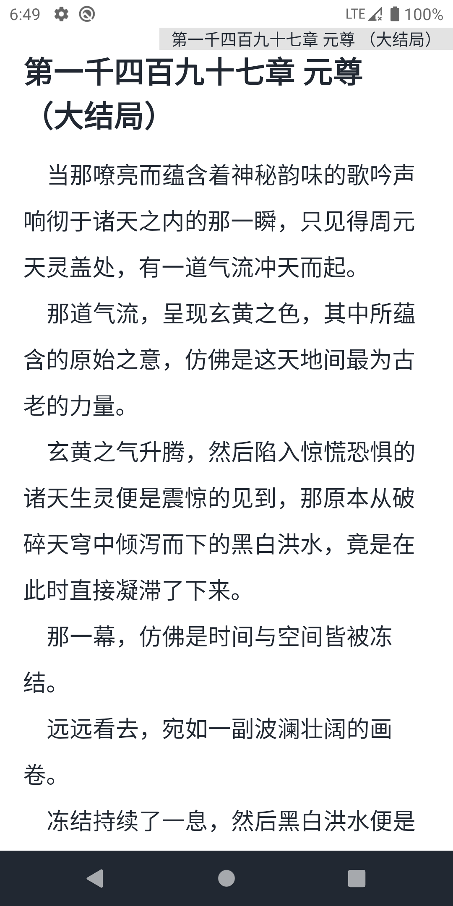

MyComic 深度盘点：从漫画阅读器到跨源聚合工具的能力全景
这不是一款普通的漫画阅读 App。我们从数据源架构、阅读交互、扩展能力三个维度系统性拆解 MyComic，帮你判断它是否值得成为日常阅读的主力。
在 Android 漫画阅读器这个细分赛道，MyComic 一直是被低估的存在。它不像某些头部产品那样靠社区或版权资源出圈，也不以花哨的界面动效见长——去MyComic官网看一下你会发现，从定位上看它更接近一套「数据源聚合 + 轻量阅读内核」的基础设施：你把想看的漫画源接进来，它负责把搜索、详情、阅读这整条链路跑通。这种工具属性让 MyComic 在硬核用户圈里口碑扎实，但也意味着它的价值需要花点时间才能看明白。
能力域一：多源聚合的漫画底座
MyComic 最核心的设计就是「源驱动」——它本身不生产内容，只提供一套通用框架让各种漫画源接入。这个架构的好处是显而易见的：当某个源因为域名变动或反爬升级挂掉时，你不需要换 App，切到另一个源就行。从实际使用来看，同一部作品在不同源上的可用性差异很大，A 源今天能看的 B 源可能已经失效，反过来亦然。MyComic 把这个选择权交到用户手里，而不是绑定单一平台。
架构层面，每个漫画源都要经过三个阶段才能算可用：搜索返回结果、详情页拉到章节列表、阅读页拿到图片 URL。MyComic 在源码里甚至内置了基类测试设施（BaseSourceTest），允许开发者在打包进 APK 之前就在本地验证这三个环节，每个环节的请求 URL、解析结果都会打印出来。MyComic文档里有更详细的测试流程说明，包括如何解开测试方法注释、如何用 Gradle 命令行跑测试。这种做法在同类 App 里相当少见——大多数产品把源当成黑盒，挂了就静默失败，用户只能反复重进。MyComic 给了开发者（包括想自定义源的普通用户）一个调试的黄金时期，在真机上打包之前就把问题暴露出来。
但多源架构也有代价。源的维护速度直接决定了可用性上限。当目标平台更换 CDN 域名、加入滑块验证或 UA 校验时，漫画源如果没跟上，就会出现搜索返回空、章节列表加载失败、图片一直转圈等典型症状。排查这类问题的路径通常是：先长按重试图片（网络闪断最常见），切换 Wi-Fi 和移动数据（排除运营商限制），再切一个源对比，如果确定是当前源失效，就只能等新版本修复。
能力域二：小说阅读的跨品类扩展
漫画和小说虽然都是阅读类内容，但技术链路差异不小。MyComic 在漫画阅读的基础上扩展了小说源支持，内置了 12 个小说源，包括新笔趣阁、17K 小说、塔读文学等主流平台。切换到小说源后，搜索框的行为会完全不同：返回的是小说条目而非漫画条目，打开后进入的是章节列表页面，阅读界面也变成了纯文本滚动模式。
小说源的特殊性体现在几个方面。首先是技术上的区别：漫画源解析的是图片 URL 列表，小说源抓取的是纯文本内容，解析逻辑相对简单。但反爬策略恰好相反——小说平台对爬虫的封控比漫画平台激进得多，失效概率更高、速度更快。在内置的 12 个小说源里，目前已有全书网、全小说、墨缘文学、Mi 看书、书本网等多个标记为失效。这是用户体验上最直接的短板。

即便如此，小说源的扩展仍然有意义。对于习惯在一个 App 里同时追漫和读网文的用户来说，不用反复切换产品本身就是不小的便利。而且小说源的失效通常是阶段性的——开发者会在新版本中跟进修复，安装包从官方下载渠道拿就行，失效的源可能过几个版本就回来了。
能力域三：阅读交互的细节打磨
进入漫画章节后，MyComic 给出的是一套沉浸式的阅读器界面。整屏被漫画图片占据，右上角仅显示当前章节编号和页码，没有多余的 UI 元素干扰。在交互设计上有两个值得单独说的点。
第一个是图片加载失败时的处理。这是多源架构下的高频痛点——网络闪断、CDN 临时故障、请求排队超时都会导致某些章节图片加载不出来。MyComic 没有简单地给个「加载失败」按钮，而是在失败的图片位置提供长按重试：长按空白处或占位图，应用会重新发起这张图片的请求。这个设计看似微小，实际用起来能省不少事——不用退出章节重进、不用翻页找位置，原地就能恢复。
第二个是对已显示图片的长按缩放。在密集分镜或对话框小字的场景下，放大查看细节的需求很常见。MyComic 把这个功能藏在长按里，不占界面空间，但需要的时候随手就能用。点击屏幕中间区域则会调出完整的控制菜单，包括章节跳转、返回画架、阅读模式切换等选项——与长按是两条独立的交互路径，不会互相冲突。
短板也要说
MyComic 的短板和它的优势几乎是一体两面的。源驱动架构给了用户选择权，但也意味着可用性上限受制于源的维护速度。某个源失效后，用户能做的只有切换或等待新版本修复，没有中间态。相比之下，有官方版权合作的产品虽然内容受限，但稳定性更有保障。
另一个短板是文档和社区生态比较薄。内置的测试设施是面向开发者的，普通用户如果想自定义源、调整参数、排查问题，能找到的参考资料有限。对于只想用不想折腾的人来说，MyComic 的「源驱动」思维反而构成了使用门槛。
什么样的人该用它
如果你符合下面三类中的任意一类，MyComic 都值得试试。
第一类是追漫量大、对单一平台内容覆盖不满意的用户。多源聚合的核心价值就在这里：A 源看不到的作品 B 源可能有，一个 App 搞定的事不用装三四个。
第二类是同时追漫又读网文的混合阅读者。虽然小说源的稳定性不如漫画源，但在一个应用里统一管理两类阅读进度，本身就足够成为切换的理由。
第三类是喜欢折腾、愿意自定义源的硬核用户。内置的测试设施和开源架构给了这类人发挥空间——自己写源、自己调试、自己维护，这在闭源的同类产品里几乎不可能。作为开源项目，它的文档和代码同步托管在GitHub、Gitee、GitCode三处，国内用户访问后两者通常更顺畅一些。